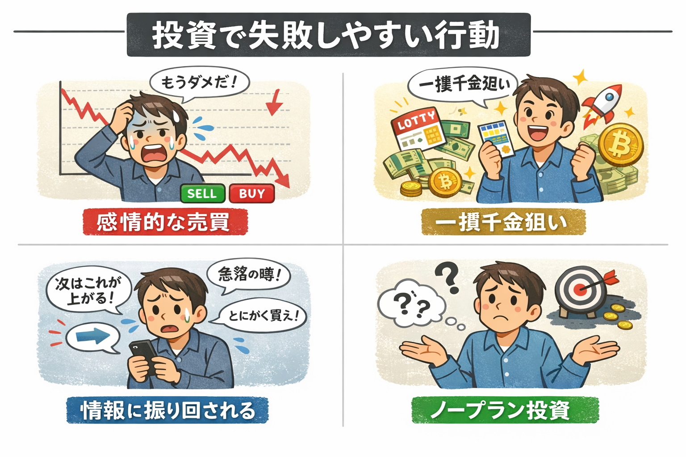

投資で失敗する人の共通点とは？初心者が避けるべき行動を解説
投資で失敗する人の共通点を最初に整理

- 投資の失敗は知識不足だけでなく、行動パターンにも原因があります
- 初心者は感情で動いたり、焦って判断したりしやすいです
- 共通点を知っておくことで、避けやすくなる失敗もあります
「投資で失敗する人って、何が違うの？」
「初心者がやってしまいやすい失敗を先に知っておきたい」
このように感じる方は多いのではないでしょうか。
投資では、誰でも迷ったり、思ったようにいかなかったりすることがあります。
ただし、失敗しやすい人にはある程度共通した行動パターンが見られることがあります。
この記事では、投資で失敗しやすい人の共通点を初心者向けにやさしく整理しながら、どんな行動を避けたいのか、どう考えれば落ち着いて進めやすいのかをわかりやすく解説します。
まず押さえたいポイント
投資で大切なのは、特別なテクニックよりも基本を崩さないことです。
失敗しやすい行動を知っておくだけでも、判断はかなり整理しやすくなります。
感情で売買してしまう人は失敗しやすい
- 焦りや欲で動くと判断がぶれやすいです
- 上がると飛びつき、下がると慌てて売りやすくなります
- ルールがないと感情に流されやすいです
- 初心者ほど値動きに気持ちが振られやすい傾向があります
投資で失敗しやすい人の代表的な共通点は、感情で売買してしまうことです。
株価が急に上がると「今買わないと乗り遅れるかもしれない」と感じやすく、逆に下がると「もうダメかもしれない」と不安になりやすいです。
こうした感情は自然なものですが、その都度流されてしまうと、買う理由や売る基準が崩れやすくなります。
その結果、高いところで買って安いところで売るような動きにつながることもあります。
初心者のうちは特に、相場の上下を自分の失敗や成功と強く結びつけやすいです。
だからこそ、まずは感情をなくすのではなく、感情だけで動かない仕組みを作ることが大切です。
知識不足のまま始めると失敗につながりやすい
- 商品や仕組みを理解せずに始めると判断しにくいです
- 値動きの理由が分からないと不安が強くなりやすいです
- 言葉だけ知っていても、使い方まで理解することが大切です
- 動画やSNSの情報をそのまま真似するのも注意が必要です
投資は、実際にやりながら学ぶ部分もありますが、基本を知らないまま始めると、何が起きているのか分からず不安になりやすいです。
株価が下がったときも「なぜ下がっているのか」が分からないと、冷静に考えにくくなります。
また、用語だけを知っていても、それがどんな場面で使われるのか分かっていないと、実際の判断にはつながりにくいです。
信用取引、損切り、利益確定、ナンピンなども、言葉だけでなく考え方まで理解することが大切です。
特に初心者のうちは、動画やSNSで見た話題の銘柄や手法をそのまま真似したくなることがあります。
ただし、自分で意味を理解していない状態だと、相場が動いたときに対応しにくくなります。
無理な資金で投資すると判断が崩れやすい
- 生活費まで投資に回すと精神的な負担が大きくなります
- 大きく取り返そうとすると無理な判断をしやすいです
- 余裕資金で行うことが基本です
- 初心者はまず少額から慣れる考え方もあります
投資で失敗しやすい人は、資金のかけ方に無理がある場合も少なくありません。
生活費や近いうちに必要なお金まで投資に回してしまうと、少しの値動きでも落ち着いて見られなくなります。
その状態では、「早く増やしたい」「損を取り返したい」という気持ちが強くなりやすく、冷静な判断が崩れやすいです。
投資は余裕資金で行うのが基本といわれるのは、単に安全のためだけでなく、判断を安定させる意味もあります。
初心者にとっては、最初から大きな金額で勝負するより、少額から値動きや自分の感情に慣れていくほうが、結果として失敗を減らしやすいです。
ルールを決めずに続ける人も失敗しやすい
- 買う理由と売る基準がないと迷いやすいです
- 利益確定や損切りの判断が遅れやすくなります
- 毎回その場で決めると一貫性がなくなりやすいです
- 簡単なルールでも持っておくと整理しやすいです
| 失敗しやすい状態 | 起こりやすいこと | 見直したいポイント | 初心者の考え方 |
|---|---|---|---|
| 買う理由があいまい | 下がったときに持ち続ける根拠が弱い | なぜ買うのかを言葉にする | 理由を持つだけでも整理しやすいです |
| 売る基準がない | 利益確定も損切りも迷いやすい | 目安を事前に決める | 完璧でなくても基準は役立ちます |
| 相場のたびに判断が変わる | 一貫性がなくなりやすい | 短期か長期か方針を決める | 軸を持つことが大切です |
| 感覚だけで続ける | 反省しにくく経験が残りにくい | 行動の理由を振り返る | 少しずつでも学びにつながります |
投資では、毎回完璧な判断をすることよりも、ある程度一貫した考え方で続けることが大切です。
ルールがないまま始めると、上がっても下がっても迷いやすくなります。
たとえば、「どんな目的で買うのか」「どれくらい上がったら見直すのか」「どれくらい下がったら考え直すのか」など、簡単なルールがあるだけでも判断はかなり整理しやすくなります。
最初から細かいルールを作る必要はありません。
まずは、自分がなぜその行動を取るのかを説明できる状態を目指すだけでも十分に意味があります。
初心者が失敗を減らすために意識したいこと
- 完璧を目指しすぎず、基本を押さえることが大切です
- 分からない言葉や仕組みは先に確認したいです
- 少額で経験を積みながら学ぶ考え方があります
- 相場より先に、自分のルールを整える意識が重要です
初心者が投資で失敗を減らしたいなら、まずは大きく勝つことより、基本を崩さずに続けることを意識したほうが進めやすいです。
投資では、急いで結果を出そうとするほど判断が雑になりやすいことがあります。
また、分からないまま進めないことも大切です。
用語、商品の仕組み、株価が動く理由などを少しずつ理解していくと、動画や記事の内容もつながりやすくなります。
初心者が避けたい行動のまとめ
- 感情だけで買う・売る
- 仕組みを理解しないまま始める
- 無理な金額を投資に回す
- ルールを決めずに続ける
※失敗を完全になくすことは難しくても、避けやすい失敗は事前に減らすことができます。
投資の失敗を減らすためにあわせて読みたい関連記事

投資で失敗しやすい行動を理解したら、次は株価が動く理由や買うタイミング、売るタイミングの考え方もあわせて確認しておくと判断しやすくなります。
以下の関連記事も参考にしてみてください。


証券口座の比較を見ておきたい方へ

一般ユーザー目線の体験でおすすめの会社をご紹介

よくある質問（FAQ）

-
Q. 投資で失敗する人にはどんな共通点がありますか？
感情で売買する、知識不足のまま始める、生活費まで投資に回す、ルールを決めずに行動するなどが、失敗につながりやすい共通点として挙げられます。 -
Q. 初心者は投資で失敗しやすいですか？
経験が少ないぶん迷いやすいですが、基本を理解しながら無理のない範囲で進めれば、失敗を減らしやすくなります。最初から完璧を目指しすぎないことも大切です。 -
Q. 投資で失敗しないためには何を意識すればよいですか？
投資の目的を決めること、余裕資金で行うこと、感情で動かないこと、買う前にルールを決めておくことが基本です。 -
Q. 話題の銘柄をすぐ買うのは危険ですか？
必ず危険とは限りませんが、話題だけで飛びつくのは注意が必要です。なぜ上がっているのか、自分はなぜ買うのかを整理してから判断することが大切です。 -
Q. 少額から始めるほうが失敗しにくいですか？
少額なら失敗がなくなるわけではありませんが、損失額を抑えやすく、経験を積みながら学びやすいというメリットがあります。
ご利用にあたっての注意事項
本記事は情報提供を目的としており、投資の勧誘を目的としたものではありません。株式・ETF・投資信託・外国証券等の取引は元本保証がなく、価格変動等により損失が生じる場合があります。投資で失敗しやすい行動には一定の傾向がありますが、すべての人に同じ結果が当てはまるわけではありません。取引開始前に、契約締結前交付書面や商品説明書、目論見書等を必ずご確認のうえ、ご自身の判断と責任でお取引ください。
最終更新日：2026-03-25